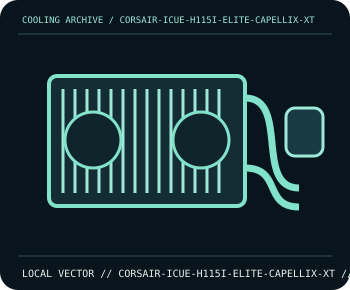

[ INDIVIDUAL COMPONENT // COOLING ]
Corsair iCUE H115i ELITE CAPELLIX XT
280 mm AIO (CW-9060069-WW) with two 140 mm AF RGB ELITE fans and a Commander CORE controller.

IDENTIFICATION: Confirm the complete model, revision, included mounting hardware, and host requirements against the manufacturer documentation before installation.
Manufacturer specifications
| Catalog subcategory | All-in-one liquid coolers |
|---|---|
| Exact model | Corsair iCUE H115i ELITE CAPELLIX XT |
| Radiator | 280 mm aluminium radiator; 322 × 137 × 27 mm. |
| Fans | Two 140 mm AF RGB ELITE PWM fans; 500–1700 rpm. |
| Pump and wiring | RGB pump head, 400 mm tubing, and Commander CORE fan/RGB controller in the package. |
| Socket and fit | Intel LGA1700/LGA1200/LGA115x/LGA2011/LGA2066 and AMD AM5/AM4/sTR4/sTRX4; verify any socket-specific standoffs and case support for a 280 mm radiator. |
Compatibility and installation
Use the CW-9060069-WW mounting kit and Corsair instructions; do not mix standoffs from another Capellix revision. Connect the Commander CORE, SATA power, and USB 2.0 header as specified, then check pump tach and radiator-fan control in firmware/iCUE.
- Disconnect system power before installation or rewiring, and follow the exact model manual.
- After assembly, confirm fan/pump operation and monitor temperatures before sustained workload.
Manufacturer source
- Corsair — iCUE H115i ELITE CAPELLIX XT product specificationsManufacturer product documentation; check the current model revision, package contents, and local socket kit before purchase or installation.
This static catalog entry is an identification aid, not a compatibility guarantee; fit and ratings can vary by revision, mounting kit, and host configuration.